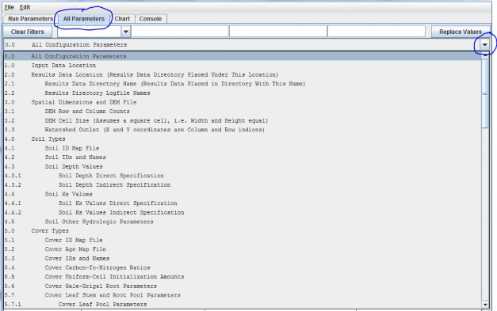
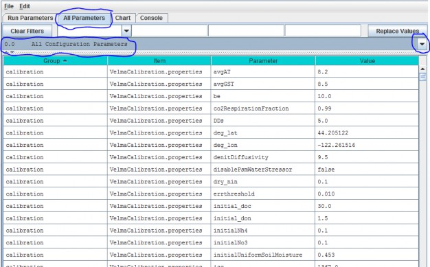
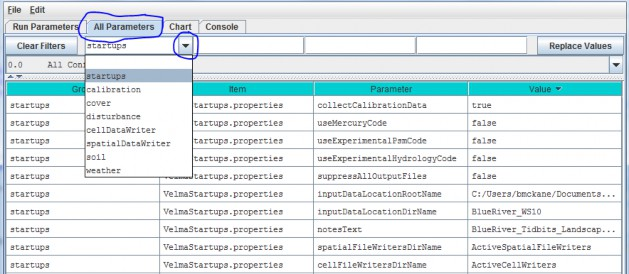
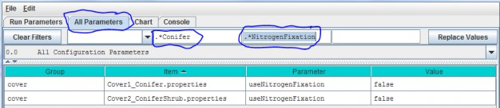
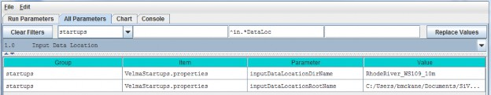

Steps for Configuring All Parameters TOC Sections
The "All Parameters Table of Contents" (TOC) provides users with a logical sequence of steps for creating a newsimulator configuration, or for quickly locating and calibrating parameters for existing configurations.
To access the All Parameter TOC, click the GUI's "All Parameters" tab, then click the drop-down button located on the right side of the4-window filter field (don't confuse this button with the one located next to the leftmost filter field):

That drop-down menu that appears is designed to organize subsets of model parameters in a "Table of Contents" format. The screenshot above shows the first page of the All Parameters TOC. Additional pages can be viewed byholding your mouse cursor over the TOC and scrolling down.
In all, the TOC includes 26 main sections (0.0 - 25.0), each of which addresses a particular simulationconfiguration procedure.
The All Parameters TOC is designed to:
- Provide a structured step-by-step guide for building a new simulator configuration.
- Help users quickly make specific adjustments to an existing simulator configuration, for example, to change thedirectory path and/or folder name for input and output files, or to calibrate a particular subset of parametersfor a hydrological or biogeochemical process.
All Configuration Parameters
Using the drop down button on the right side of the filter field select All Configuration Parameters from the All Parameters menu.

This view displays all Groups, Items, Parameters and Values for a simulator configuration in a single, scrollable view. To see a pop-up description of any Group, Item or Parameter in any cell, hover the mouse cursor over the cell.
Alternatively, these descriptions are summarized here in an Excel file located here:
Filename:
VELMA 2.0_Description of Calibration Parameters.xlsx;
Folder location:
VELMA Model\Supporting Documents\Excel Calibration Files
The All Configuration Parameters view contains an overwhelming amount of information, but the user has some search options for organizing and selecting things of interest. Experienced users may find that any of the first three search options, below, are useful for finding a specific parameter of interest in an existing simulator configuration.
- Option 1 - For some purposes it is useful to use the All Configuration Parameters view to locate, sort and select parameters of interest. For example, you can sort columns by double clicking the Group, Item, Parameter or Value column headers (turquois). You can also right click a particular cell and select "Set Column Filter to cellname", which will display values for the selected item across all cover types, soil types, disturbance type, etc. For example, this is useful if your watershed has more than one cover or soil type.
- Option 2 - Use the drop-down buttonimg(width="19" height="24" alt="image"src="../../../public/Image_034.gif") p on the right side of the first filter field (above Group) toselect from the list of model configuration categories: startups, calibration, cover, disturbance,cellDataWriter, spatailDataWriter, soil, and weather (the meaning and use of these categories will be explained below, under sections 1.0 to 25.0).

- Option 3 - Type a search string in the filter fields located above any of the four turquois column headers. Suppose you want to make sure the nitrogen fixation subroutine is turned off for a coniferous cover type. As the screenshot below shows, by typing ".*Conifer in the "Item" filter field and ".*NitrogenFixation" in the "Parameter" filter field. This search verified that the "useNitrogenFixation" parameter is turned off (false).

- Option 4 (recommended) - Although experienced users may find Options 1 - 3 handy for quickly locating specific Items, Parameters or Values, we recommend that all users stick with using sections 1.0 - 25.0 of the All Parameters TOC when configuring a new VELMA application. These sections collectively contain the same information listed under "All Configuration Parameters", but in asequence of steps organized to assist users in building new simulator configurations or editing existing ones. Details follow.

Parameter Definitions
| Parameter Name | Parameter Description |
|---|---|
| inputDataLocationDirName: | The name of a subdirectory of the inputDataLocationRootName directory that contains the set of input data for a specific simulation run. When left unspecified or commented-out defaults to "". (I.e. VELMA will look for input data in the inputDataLocationRootName directory itself) |
| inputDataLocationRootName | Fully-qualified path to the directory containing input data directories. When left unspecified or commented-out defaults to the "../data/" subdirectory of VELMA's installation directory. |
For the inputDataLocationRootName parameter, specify a directory name for the folder that contains the set of input data for a given simulation configuration. The inputDataLocationRootName is the path tothat directory.